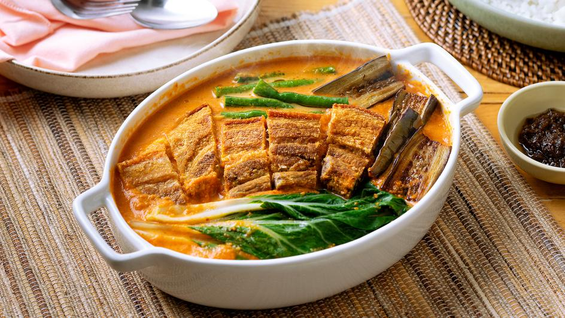

Start Your Cooking Journey
The most searched foods in Philippines





This Recipe Sharing Platform is an online community where users can share, discover, and appreciate culinary creations. This platform encourages users to showcase their favorite recipes, engage in discussions about cooking techniques, and contribute to a collaborative environment of food enthusiasts. It has an online funding transaction for optional financial contributions, the platform aims to foster a sense of appreciation and support within the cooking community.
The most searched foods in Philippines
Dishcovery is tailored for home cooks and food enthusiasts, not intended as a substitute for professional culinary platforms.
Opportunity to discover more!
Your skills might be your key to become rich!